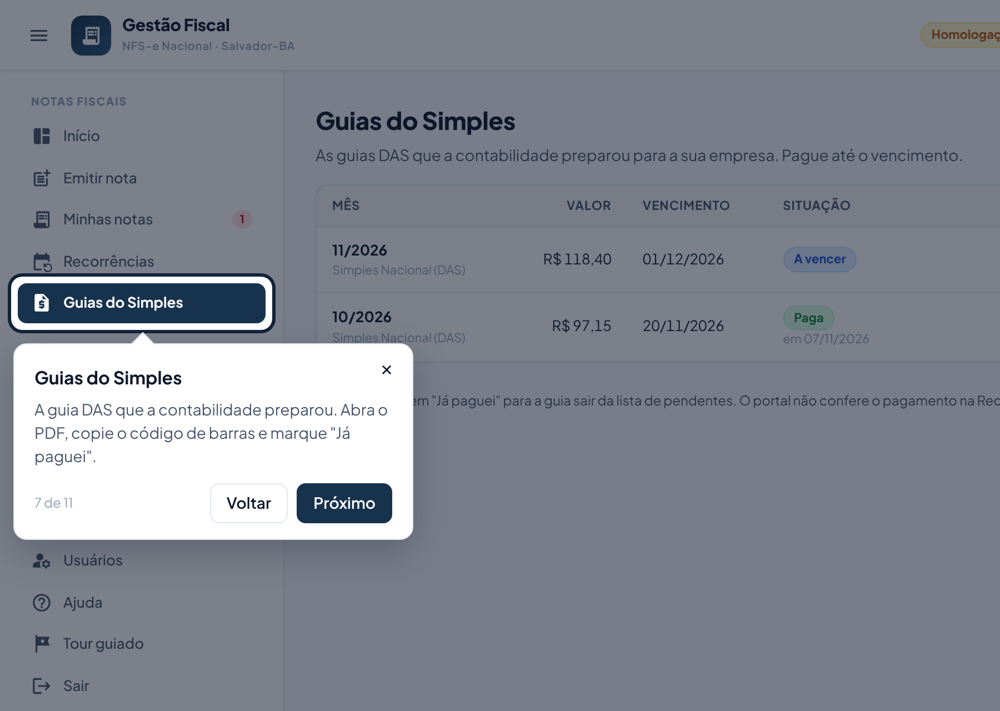
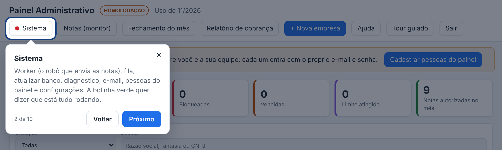

Tour guiado: conheça a tela em 1 minuto
Um passeio rápido em cima da própria tela: cada parte fica destacada, com uma explicação curta ao lado.
-
Ele aparece sozinho na primeira vez
Na primeira vez que você entra no portal ou no painel neste computador, o tour começa sozinho. Depois disso, só quando você pedir.
-
Ande pelos passos
Clique em Próximo e Voltar, ou use as setas do teclado. Para sair a qualquer momento, clique no ✕ ou aperte Esc. No último passo, clique em Concluir.

-
Veja de novo quando quiser
- Portal do cliente: no menu, em Conta, clique em Tour guiado. No celular, abra o menu (☰) primeiro.
- Painel do administrador: no topo, clique em Tour guiado.

Se der errado
| O que aconteceu | O que fazer |
|---|---|
| O tour aparece toda vez que entro. | O navegador está apagando os dados do site (janela anônima ou limpeza automática). Feche com o ✕: ele não atrapalha o uso. |
| Um passo aparece no meio da tela, sem destacar nada. | Aquela parte não está visível nesta tela (por exemplo, no celular). A explicação continua valendo. |
← Voltar para a Central de Ajuda
Última revisão: 08/11/2026